Do arquivo digital ao acabamento final, cada prótese passa por conferência técnica antes de chegar ao consultório.
Escolha pelo tipo de caso e entenda o que precisa chegar bem definido para a bancada produzir com previsibilidade.
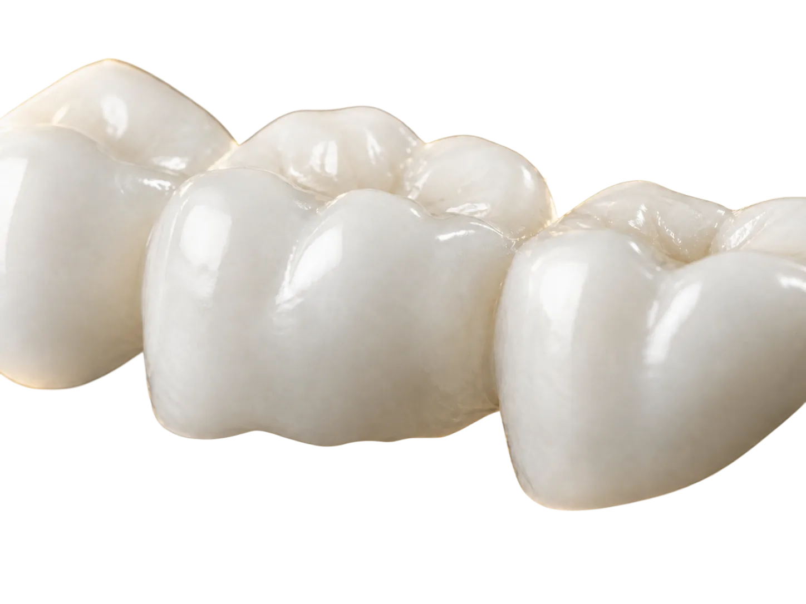
Coroas e estruturas para casos que pedem estabilidade e boa leitura de cor.
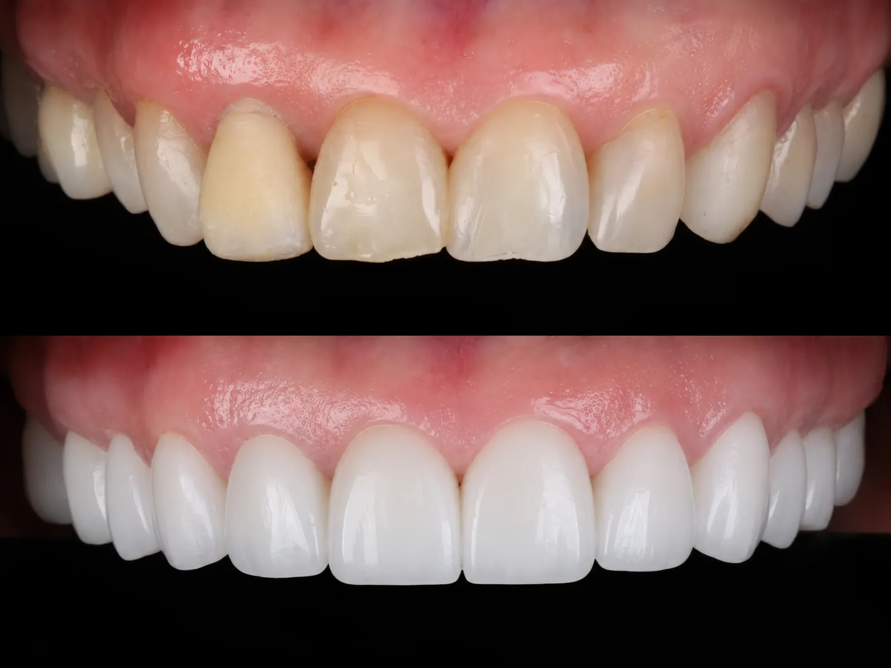
Laminados e peças anteriores com forma, textura e valor bem controlados.
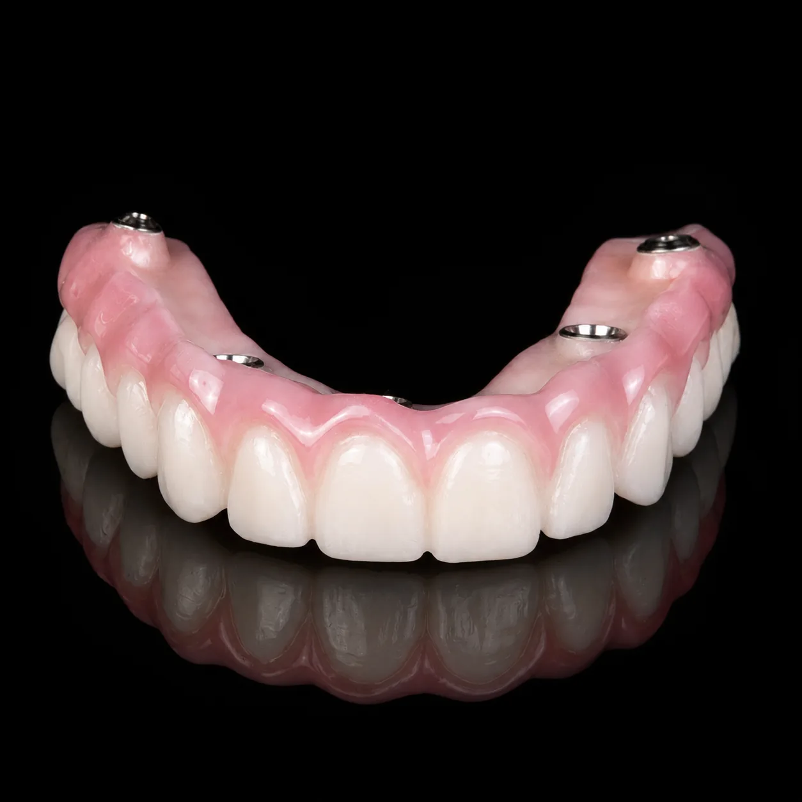
Coroas, protocolos e componentes pensados para encaixe passivo.
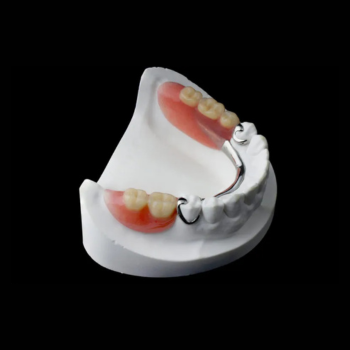
Removíveis com desenho de estrutura, retenção e suporte bem definidos.
Cada etapa reduz uma incerteza: indicação, desenho, produção, acabamento e conferência para entrega.
Conferimos indicação, arquivos, fotos, cor, prazo e pontos críticos.
Definimos espessura, contatos, suporte, eixo de inserção e material.
Usinamos, imprimimos, fundimos ou estratificamos conforme o serviço.
Ajustamos anatomia, textura, polimento, cor e pontos de contato.
O caso sai embalado, identificado e pronto para conferência clínica.
PPR exige mais do que uma estrutura bonita. O desenho precisa distribuir suporte, controlar retenção e respeitar tecidos para reduzir ajustes desnecessários na clínica.
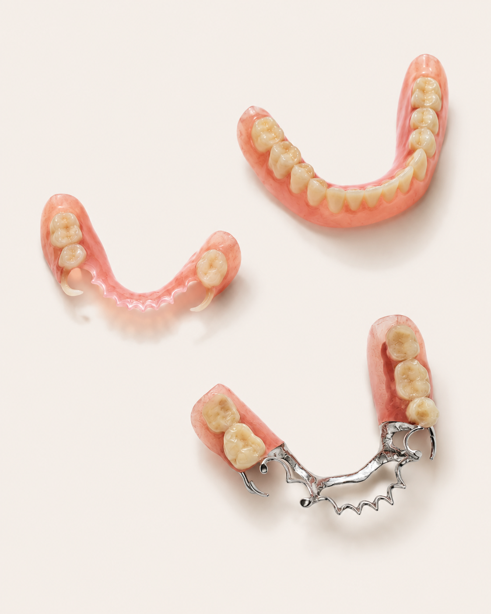
Exemplos visuais ajudam a alinhar expectativa de forma, acabamento, gengiva artificial e discrição de retentores.
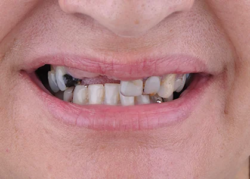
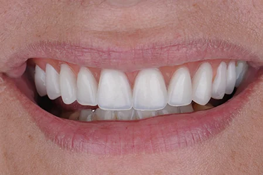
Estrutura extensa com passividade, suporte labial e acabamento gengival conferidos.
Implantes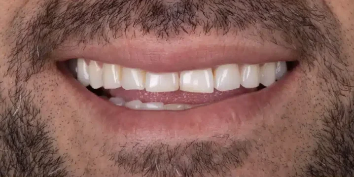
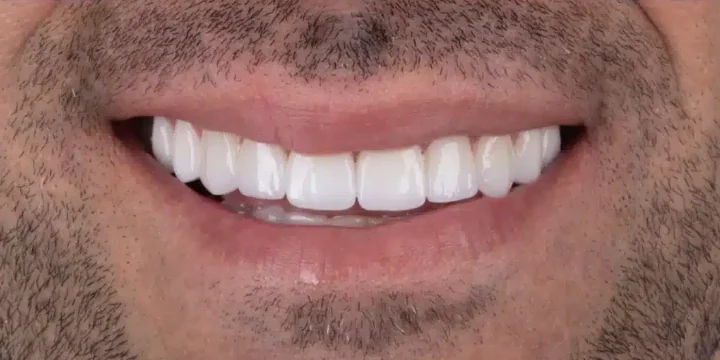
Peças anteriores com ajuste de forma, textura, borda incisal e valor.
Facetas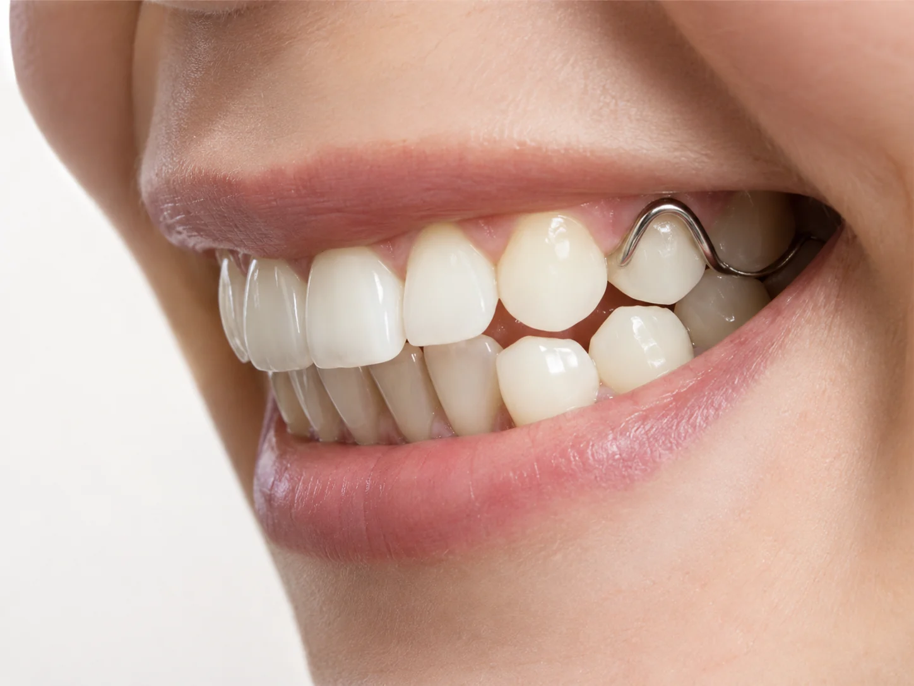
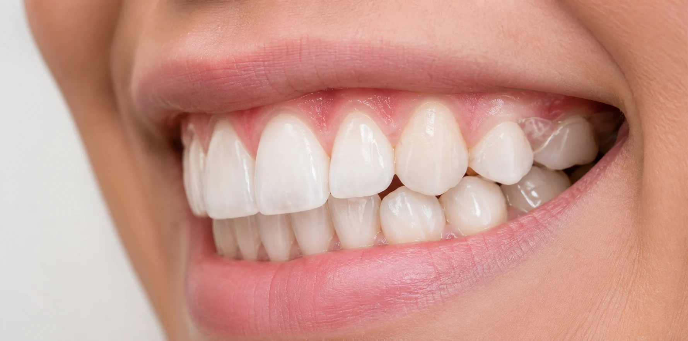
Retenção discreta, eixo de inserção e sela pensados para assentamento clínico.
PPR / Removíveis